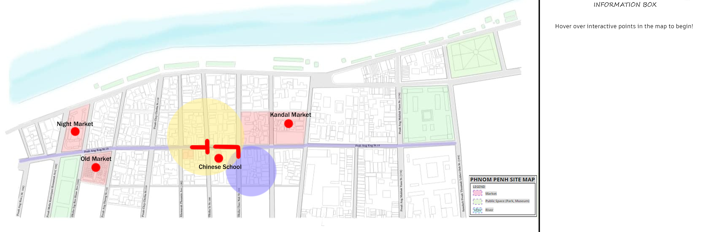
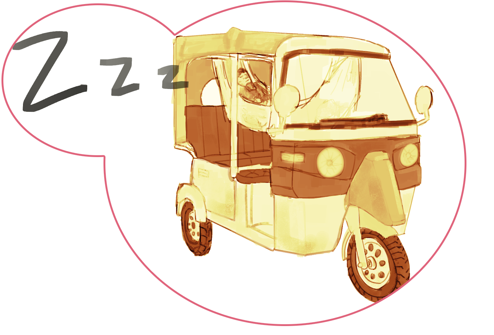
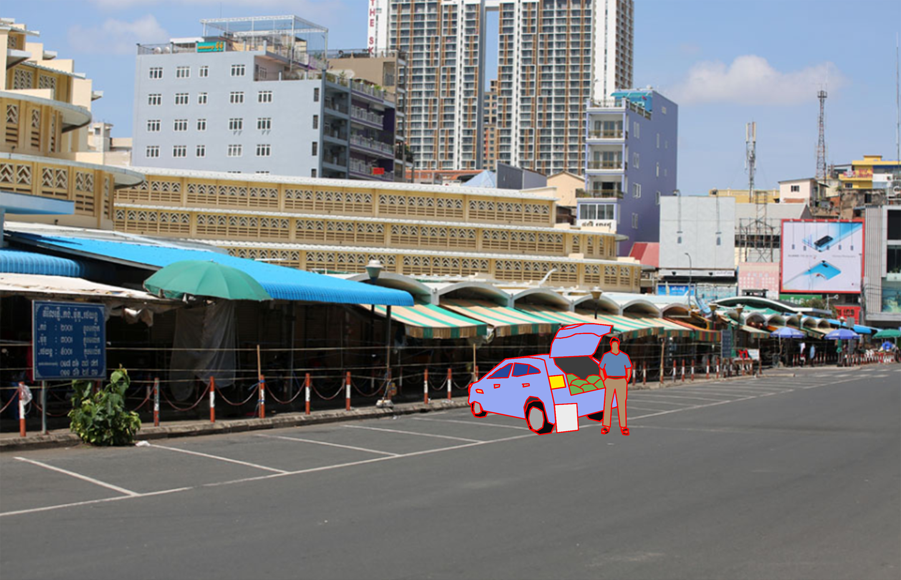
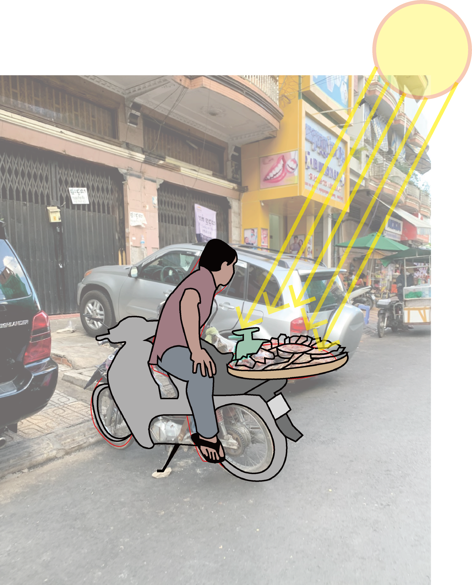
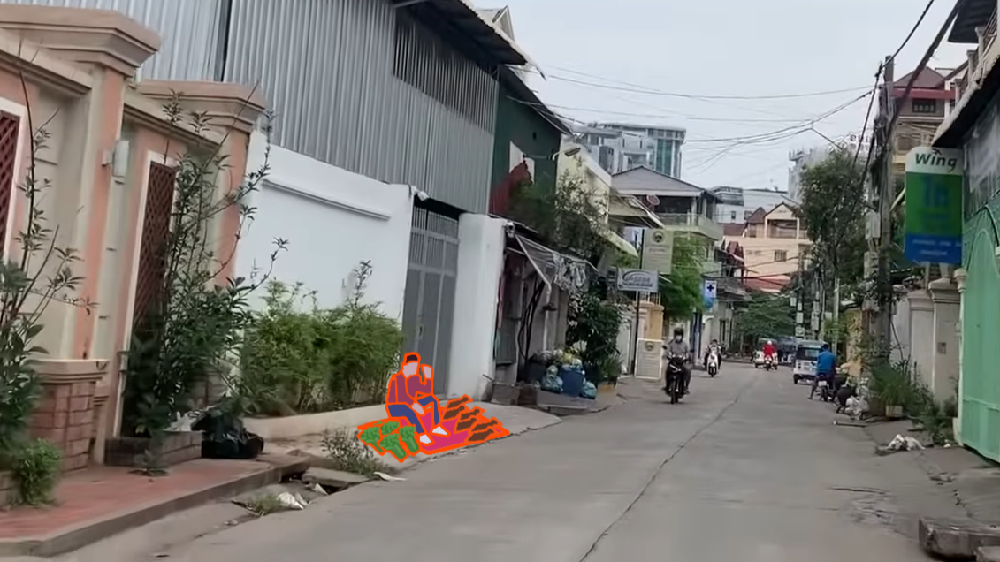
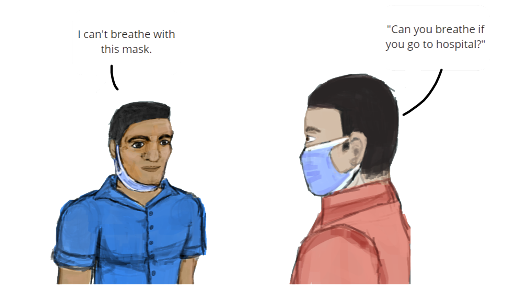
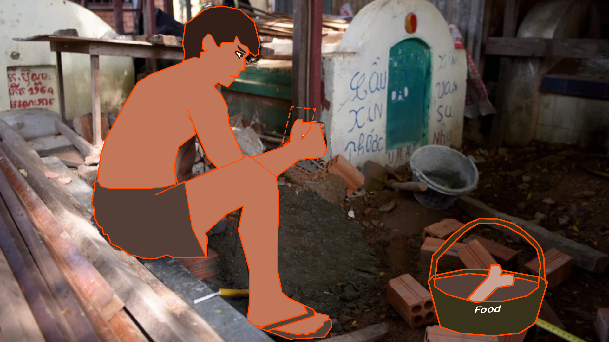
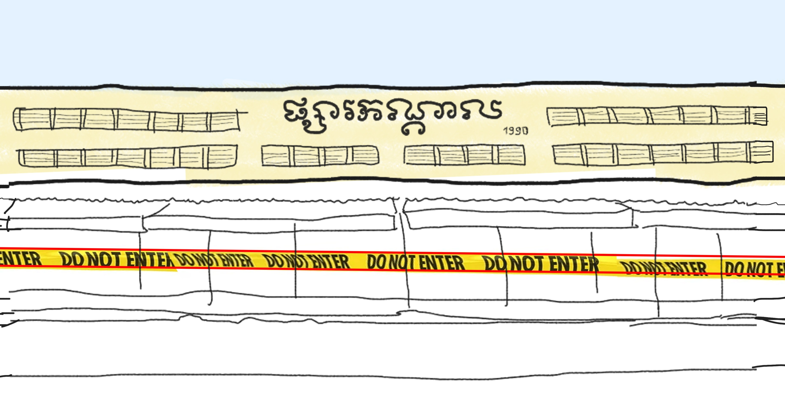
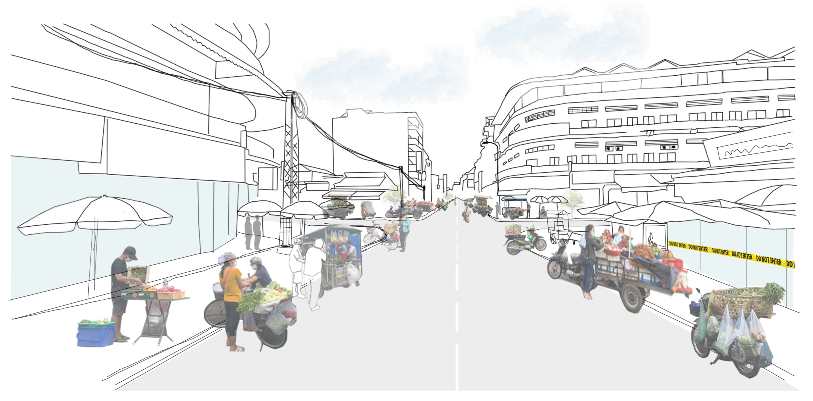

THE NEW FORM OF PHNOM PENH
Main Content
VULNERABILITY
Welcome to our research page, the purpose of this page is to visually display the information which we found on the decentralisation of food durig COVID times.
The layout of this page will be as listed:
1. Vulnurability
2. Resilience
3. City Making Image
4. In Depth Research
VULNURABILITY - to be updated to more recent version as shown on Miro

RESILIENCE INTERACTIVE MAP
Below, you can see our interactive map. Hover over areas below to find information on the area.

CITY IMAGE
Hover over the landmarks to the see more information: (WIP - Not yet complete)

In the In depth research below, feel free to participate by using the provided comment boxes, or see CONTACT page if you would like your information added to the research.
IN-DEPTH RESEARCH
Q1. How might we gain insights on the people of Phnom Penh? What are these insights?
A1. Interviews can grant insights such as:
-Greater trust/rapport can be gained, increasing chances of future potential for communication.
- Be able to gain an individuals opinions.
- Real emotions and experiences
- Ability to provide more to an answer or clarify live.
- Be able to confirm or deny things.
- Real Information and Statistics /numbers from the source
-can be done safely online
Now we pose the question to you, How might we gain insights on the people of Phnom Penh? What are these insights? (Note:Still need to add a comment section for each question (or maybe have 1 comment section with all questions on the bottom?))
Q2. How are tuktuk drivers effected by the lockdown and how do they gain support?
A2. Tuk Tuk drivers quite important to a city outside of lockdown. In a lockdown state, these drivers have nowhere to earn money, or gain support, due to many of them living in their tuktuk.

Q3. What happens to mobile food vendors during a lockdown?
A3(#1). Mobile food vendors will always try to find a way to continue work, to try to make a living. To make it as safe as possible would be beneficial for everyone.
A3(#2). Decentralized the space with mobile food vendor can be a new norm of adaptation to help people keep the distance and help seller free to move without having to play the tax.
Orginal Image Source: https://www.khmertimeskh.com/50845818/in-pictures-phnom-penhs-iconic-central-market-shuttered-and-empty-and-other-lockdown-scenes/
Q4. What happens to mobile food vendors during a lockdown?
A4. Quality of food is poor in the food system no suitable for marginaized group - not in market, so on floor + no sanitization

Original Image Source for second image: [5:17] https://www.youtube.com/watch?v=Pgna5ThniO8
Q5. Why are there problems with sanitary methods?
A5. Disbelief and lack of care is a barrier of trust in the system of care.

Q6. Why are marginalized people not able to access the same deals which other people can.
A6(#1).The people who most need the special online deals do not have access due to lack of technology.

Image 1 Original Image Source: https://www.google.com/url?sa=i&url=https%3A%2F%2Fwww.scmp.com%2Fnews%2Fasia%2Fsoutheast-asia%2Farticle%2F3015512%2Flife-among-dead-cambodia-development-has-forced-urban-poor&psig=AOvVaw1GGYpiZHALmJGNzzWLPj_i&ust=1626608980999000&source=images&cd=vfe&ved=0CAsQjRxqFwoTCPiL8p6R6vECFQAAAAAdAAAAABAD
Image 2 Original Image Source: https://lh3.googleusercontent.com/proxy/vV55Qg8EHKNvrGAp3AyQgMqz4mlDkMIyGRG6E21yr4ITMbYy90jCPEhodxbzXdiLvjrmaAmcPQm25vr7HJz-Moh7-U-Ywru6vmIEscHCkzCuLcUuaW85o70
A6(#2). Most of local markets were closed, especially in red zone area, therefore people can not access with food easily.

Q7. Why are marginalized people not able to access the same deals which other people can.
A7. How can mobile vendor keep up with the safety measure ?
